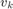
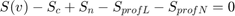

Режим тяги для модели "МАТЕРИАЛЬНАЯ ТОЧКА"
Определяются параметры движения поезда в режиме выбега
Contents
Синтаксис вызова функции
function [ ss ] = runningdown( vn,vk,pr,sn,w,tn )
vn - начальная скорость выбега vk - конечная скорость выбега pr - текущий элемент профиля пути sn - начальная координата выбега w - удельное основное сопротивление движению поезда tn - значение времени в начале режима выбега
global ksi
Коэффициенты результирующей силы тяги на участке
cfr(1,1)=-w(1,1)-pr(1,3); cfr(1,2)=-w(1,2); cfr(1,3)=-w(1,3);
Not enough input arguments. Error in runningdown (line 16) cfr(1,1)=-w(1,1)-pr(1,3);
Постоянные интегрирования по пути и вермени
sc=SVCurve(cfr,vn); tc=TVCurve(cfr,vn);
Определяем расстояние, которое поезд проедет на выбеге до достижения скорости  (скорости окончания выбега)
Stmp=SVCurve(cfr,vk)-sc;
Ищем фактическую скорость окончания выбега на текущем элементе профиля пути. При конечной скорости выбега мы должны остаться в пределах текущего элемента профиля пути, или найти скорость при которой поезд будет находиться в конечной координате текущего профиля пути. Во втором случае, скорость с которой поезд окажется в конце элемента профиля пути определяем из решения следующего уравнения: 
%----------- if Stmp+sn> pr(1,4)+pr(1,2) vk=fzero(@(x) (SVCurve(cfr,x)-sc+sn-pr(1,4)-pr(1,2)), [vn vk]); end
Зная начальную и конечную скорость поезда на участке выбега, определяем статистические характеристики движения поезда на расчетном участке
Mv=vk+integral(@(x) (SVCurve(cfr,x)-sc),vk,vn)/(SVCurve(cfr,vk)-sc); Dv=(ksi./(SVCurve(cfr,vk)-sc)).*(integral(@(x) ((x-Mv).^2.*x./(cfr(1,1)+cfr(1,2).*x+cfr(1,3).*x.^2)),vn,vk));
Расчитываем параметры движения вычисляем промежуточные параметры движения поезда на найденом участке
%------------------ dv=(vk-vn)/10; c=1; for i=vn:dv:vk ss(c,1)=i; %скорость движения ss(c,2)=SVCurve(cfr,i)-sc+sn; %координата пути ss(c,3)=TVCurve(cfr,i)-tc+tn; %время в пути %s(c,4)=vlim; %ограничение скорости %s(c,5)=v_const; %скорость установившегося режима ss(c,6)=f_res(cfr,i); %удельная результирующая сила действующая на поезд ss(c,7)=pr(1,3); %значение уклона ss(c,8)=Mv; %математическое ожидание ss(c,9)=Dv; %Дисперсия скорости ss(c,10)=0; c=c+1; end
end